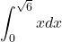
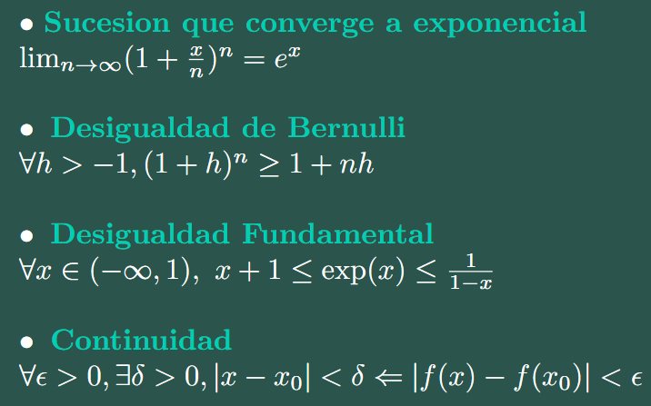

Me he visto envuelto en el mismo problema con el que pensé que había acabado. Creí ser alguien mejor llegado a este punto, y claro, comparándome con quien era hace un par de años, logré convertirme en alguien distinto, más aún no es suficiente. Gran error cometí al dejar florecer mi tranquilidad en base a esta comparación. He dejado de crecer, y si bien he logrado demostrar que la comparación es dañina, he concluido que no soy más que el resto de personas. Esta calma de la que hablo ha sesgado mi pensamiento, y solo consiguió generar conformismo. He dejado de ser crítico, creo que lo único que puede ayudarme ahora es hundirme en el lodo, al final, las únicas personas capaces de crecer son las que sufren.
Creí estar en el lugar correcto
30 Abril 2025
Destino Inmutable
Previo a Noviembre 2024
No sabría decir si la sensación es amarga o dulce.
Me dejo caer en los momentos, me atrapo en la dimensión temporal al mismo tiempo que me engaño pensando que la tengo en mis manos.
Busco algo constantemente pero nunca parece llegar, realmente ya ni siquiera sé qué busco.
Mis pasiones parecen difusas, sé que las tengo en el pecho, pero nunca se vuelven tangibles.
La tonalidad del dia me relaja. Lo único bueno que logro destacar de la época del año.
Por contrario, el invierno me inspira. Seguramente por su carácter fúnebre.
Quisiera vivir en este momento para siempre, esperándote mientras tomo café. Realmente la espera es irónicamente el momento de paz. La tranquilidad se entrega sola al definir un destino inmutable. Quizas ahí esta la clave, aferrarse a este sentimiento y esperar pacientemente.
Este es la única forma de parar de caer en los momentos y dejar de estar atrapado en la dimensión temporal.
Ilogica Añoranza
30 Nov 2024
Tengo un hambre insaciable de experimenar las cosas como lo hacia antes, de - como usualmente decimos - sentir como lo hacia antes.
Es cierto que mis sentimientos alcanzaban extremos por mi inestabilidad, pero de alguna forma extraño sentirme inestable. Antes las cosas tenian un brillo especial, un brillo que he perdido y que he intentado revivir múltiples veces con pequeño o casi nulo éxito.
De alguna forma tengo miedo de volverme viejo y aburrido, siento que mi vida va directo hacia ese pozo, aun así, agradezco mucho donde estoy. Al fin y al cabo soy como el comun de los humanos, me quejo aun asi en la buena posición en la que estoy, realmente patetico U-U.
Me da pena estar dejando de hacer las cosas que tanto me apasionan mientras me envuelvo en la excusa de no tener tiempo. Siento que todo lo que vale se me esta escapando entre los dedos...

Es cierto que mis sentimientos alcanzaban extremos por mi inestabilidad, pero de alguna forma extraño sentirme inestable. Antes las cosas tenian un brillo especial, un brillo que he perdido y que he intentado revivir múltiples veces con pequeño o casi nulo éxito.
De alguna forma tengo miedo de volverme viejo y aburrido, siento que mi vida va directo hacia ese pozo, aun así, agradezco mucho donde estoy. Al fin y al cabo soy como el comun de los humanos, me quejo aun asi en la buena posición en la que estoy, realmente patetico U-U.
Me da pena estar dejando de hacer las cosas que tanto me apasionan mientras me envuelvo en la excusa de no tener tiempo. Siento que todo lo que vale se me esta escapando entre los dedos...
Godspeed You! Black Emperor
12 Ago 2024
Godspeed You! Black Emperor - Storm
Como cualquier otro día, buscas algo distinto para escuchar. "Me suena haber visto esta portada en algún lado, supongo que tendré que echarle una mirada", dices con completo escepticismo, sin darte cuenta de que ya no hay vuelta atrás.
La vida a menudo puede parecer un piloto automático. Nos levantamos sabiendo todo lo que ocurrirá y cómo ocurrirá. Las sorpresas parecen un infortunio para aquellos que aman la rutina, y dejamos de sorprendernos con las sutilezas. Mirar por la puerta del metro, apreciar el pálido sol que ilumina la polvorienta suciedad del vidrio, disfruta de una leve brisa que arrastra un aroma peculiar, se convierten en sensaciones tristemente triviales. A veces, solo necesitamos "vivir la realidad" para darnos cuenta de que todo es infinitamente complejo e inimaginablemente sensible.
 Lift Yr. Skinny Fists Like Antennas to Heaven!
Post-Rock
Lift Yr. Skinny Fists Like Antennas to Heaven!
Post-Rock
El album se separa en cuatro pistas, cada una dividida en distintos movimientos individuales:
Disco 1
- Storm [22:32]
- Static [22:35]
Disco 2
- Sleep [23:17]
- Like Antennas To Heaven... [18:57]
Una experiencia compleja y completa es lo unico que puedo mencionar...
BC. NR
07 Ago 2024
Concorde - Black Country, New Road
Álbum ya bastante conocido, y con motivos más que suficientes.
Tiene varios temas impresionantes, emotivos y motivadores; bastante dulces y simplemente acogedores. Son bastante digeribles y ya perdí cuenta de la cantidad de veces que he llorado escuchando alguna de sus canciones (tanto de felicidad como de pena).
Recuerdo que la primera vez que los escuché - shout out para Alejandro Allende - la voz del vocalista me pareció particular, en tan simple detalle me gusta creer que es una persona cansada, con recorrido en carreta por camino de grava.
Selección personal:
- The Place Where He Inserted the Blade
- Haldern
- Concord
 Ants From Up There
Art Rock, Post-Rock,Chamber Pop, Indie Rock
Ants From Up There
Art Rock, Post-Rock,Chamber Pop, Indie Rock
Brain rot
06 Ago 2024
A medida que la tecnología evoluciona, nuestras interacciones se hacen cada vez más insustanciales.
¿Te ha pasado que quieres compartir – o que alguien en específico escuche – esa canción tan genial que dura 10 minutos, pero solo subes los 15 segundos más hermosos a tus historias de IG?
En el fondo, sabemos que lo precioso de la canción no son los 15 segundos de éxtasis; más bien, es el conjunto, incluyendo todos los minutos previos, que generan el punto de liberación. Es iluso querer llegar al final sin el previo recorrido.
Lamentablemente, las costumbres se van perdiendo y, tristemente, actualmente me veo – o me siento – rodeado de gente a la que le parecería exagerada una canción tan larga.
¿A qué quiero llegar con esto? No lo sé muy bien, quizás estoy intentando dar una explicación a esta sensación de vacío y soledad que me ha acompañado durante unos cuantos años. Me siento alejado de la sociedad, realmente aún no logro encontrar ese espacio donde sentirme cómodo en mi día a día y es algo con lo que tengo que lidiar seguido. (ingenieros recu#%&$)
De todos modos, aún no me rindo. Creo que si mantengo la cabeza en alto, lograré encontrar mi espacio seguro, ese murmullo cálido que suena de fondo mientras piensas en que todo está bien.
QUES BONITO CANDELABRO
01 Ago 2024
Dedo Chico - Candelabro
Me pone muy feliz este album,
realmente vale la pena escuchar aunque sea una cancion :)
Sencillamente un album prolijo que exalta el corazon.
Ya perdi la cuenta la cantidad de veces que me puse a correr de la nada
o simplemente me levante de la cama por escuchar alguna de sus canciones.
Mencion Honrrosa:
- Piano a Pinao
A mi parecer la mejor del album, realmente me llega al corazon tanto en sonido como en letra,
mas de una lagrima se me cae cuando dice "solo es cosa de esperar, la tormenta pasara"
Simplemente, una maravilla de tema.
 Ahora o nunca
Indie Rock, Art Rock
Ahora o nunca
Indie Rock, Art Rock
Drunk With Hope
31 Jul 2024
The Landing - Duster
Drunk with hope for the better things
The gears all froze for the millennium
The same moon as the wrong kiss
South, down, east, left, out
 Stratosphere
Space Rock
Stratosphere
Space Rock
GOOD MORNING
31 Jul 2024
The Place Where He Inserted the Blade - Black Country New Road
(1:50)
“I know you're scared
Well, I'm scared too
Oh, that every time I try to make lunch
For anyone else, in my head
I end up dreaming of you
And you come to me
Good morning„
Por qué siento tanto?
El pasado me acecha
31 Jul 2024
Creo lograr escaparme. Cuando me veo lo suficientemente lejos, me agarra del hombro y me mira fijamente a los ojos.
Sin decirme nada se a que se refiere. 
Al final del dia
28 Jun 2024
Sigo estando igual de solo
Dia tranquilo
Sep 25 2023
En tus ojos miro y encuentro calma
De alguna manera tocas mi alma
Paseos sencillos, sin fines de charla
Y vuelvo a tener que apagar la alarma
Encuentros casuales
Más de lo que me gustaría
Motivos neutrales
No sabía que tendrías
¿Fui engañado o me engaño a mí mismo?
Siempre culpa del mismo organismo
El mismo ser pensante, el mismo ser vivo
El mismo que no me cree cuando sonrío
Actually
Sep 25 2023
Lo mas ñoño que le he escrito a alguien en mi vida es

Me da risa que esto lo hago con el simple fin de algun dia mirar mi cuenta y ver las tonteras que subia (ola joaco del futuro)
Aqui un collage mio tomando cafe en toesca en dias distintos
u.u
Sep 25 2023
No quedará
Más que el cielo en mi cabeza
Y palabras que no quiero escuchar
⋮
La misma ropa
Que no me queda
Y aunque quiera se que no me va a quedar
Feeling uncomfortable in my own skin
May 15 2023
terminar
Such A Pretty Planet
Such An Ugly World
Cuando
May 12 2023

Viaje a otro lugar
May 9 2023
Cuando voy regreso a mi casa despues de la U [viaje de hora y media] me gusta imaginar que me voy muy lejos, en un viaje largo. pensar en desaparecer y olvidarme de todo es tranquilizante de vez en cuando.
Aveces cuando me siento mal mi mente se eleva, la gente se ve diminuta, incluso las ciudades o el mundo. Todo es tan insignificante, nada realmente importa.
Aveces cuando me siento mal mi mente se eleva, la gente se ve diminuta, incluso las ciudades o el mundo. Todo es tan insignificante, nada realmente importa.

May 9 2023
Solo quiero descanzar
May 8 2023
Porfavor, solo andate, vete, no soporto tenerte aqui
solo quiero poder sentir paz.
El metro hace mucho ruido. Me hace pensar... tantos momentos empapados.
Dialogan enfrente mio, aunque no puedo hacer nada. Y espero ese momento exacto, pero realmente no parece llegar.
Yo se que a ti tambien te ha pasado, vivir en ese completo estado de alerta, el estomago se te aprieta sin sentido, miras a todos lados, crees que te estan viendo ¿estare siendo paranoico?
Aveces simplemente me gustaria desaparecer.
Este basural es mi cuerpo
TeX
May 7 2023
Me encanta LaTeX, estoy obsesionado con el, creo que es de las formas de formatear texto mas hermosas que se han creado y nadie me va a poder decir lo contrario.
Primera entrada yipiiii
May 7 2023
Aun no se muy bien que formato tendra esto, lo ideal es que siempre sea lo mas creativo posible, aunque ando cortito de ideas. Intentare subir imagenes, harto gif, y lo que salga.
Tu, linda persona que estas leyendo esto......
.
.
.
.
.
.
.
.